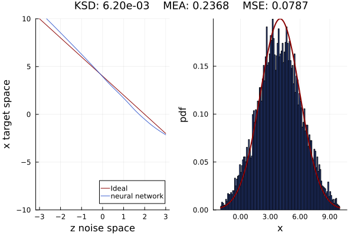
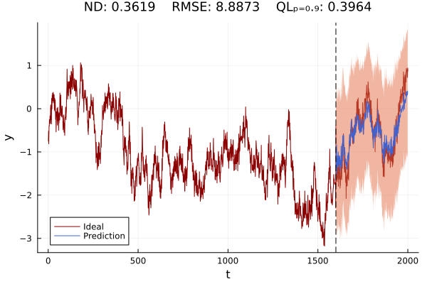

To make simple use, once the package is installed, just run the examples.
Learning 1-D distributions
# This example is from examples/Learning1d_distribution/benchmark_unimodal.jl
# We include the module
using ISL
include("../utils.jl")
@test_experiments "N(0,1) to N(23,1)" begin
# Generator: a neural network with ELU activation
gen = Chain(Dense(1, 7), elu, Dense(7, 13), elu, Dense(13, 7), elu, Dense(7, 1))
# Discriminator: a neural network with ELU activation and σ activation function in the last layer
dscr = Chain(
Dense(1, 11), elu, Dense(11, 29), elu, Dense(29, 11), elu, Dense(11, 1, σ)
)
#Noise model
noise_model = Normal(0.0f0, 1.0f0)
n_samples = 10000
# Target model composed of a mixture of models
target_model = Normal(4.0f0, 2.0f0)
# Parameters for automatic invariant statistical loss
hparams = AutoISLParams(;
max_k=10, samples=1000, epochs=1000, η=1e-2, transform=noise_model
)
# Preparing the training set and data loader
train_set = Float32.(rand(target_model, hparams.samples))
loader = Flux.DataLoader(train_set; batchsize=-1, shuffle=true, partial=false)
# Training using the automatic invariant statistical loss
auto_invariant_statistical_loss(gen, loader, hparams)
#We plot the results
plot_global(
x -> quantile.(-target_model, cdf(noise_model, x)),
noise_model,
target_model,
gen,
n_samples,
(-3:0.1:3),
(-2:0.1:10),
)
end
Time Series
@test_experiments "testing AutoRegressive Model 1" begin
# --- Model Parameters and Data Generation ---
# Define AR model parameters
ar_hparams = ARParams(;
ϕ=[0.5f0, 0.3f0, 0.2f0], # Autoregressive coefficients
x₁=rand(Normal(0.0f0, 1.0f0)), # Initial value from a Normal distribution
proclen=2000, # Length of the process
noise=Normal(0.0f0, 0.2f0), # Noise in the AR process
)
# Define the recurrent and generative models
recurrent_model = Chain(RNN(1 => 10, relu), RNN(10 => 10, relu))
generative_model = Chain(Dense(11, 16, relu), Dense(16, 1, identity))
# Generate training and testing data
n_series = 200 # Number of series to generate
loaderXtrain, loaderYtrain, loaderXtest, loaderYtest = generate_batch_train_test_data(
n_series, ar_hparams
)
# --- Training Configuration ---
# Define hyperparameters for time series prediction
ts_hparams = HyperParamsTS(;
seed=1234,
η=1e-3, # Learning rate
epochs=n_series,
window_size=1000, # Size of the window for prediction
K=10, # Hyperparameter K (if it has a specific use, add a comment)
)
# Train model and calculate loss
loss = ts_invariant_statistical_loss_one_step_prediction(
recurrent_model, generative_model, loaderXtrain, loaderYtrain, ts_hparams
)
# --- Visualization ---
# Plotting the time series prediction
plot_univariate_ts_prediction(
recurrent_model,
generative_model,
collect(loaderXtrain)[2], # Extract the first batch for plotting
collect(loaderXtest)[2], # Extract the first batch for plotting
ts_hparams;
n_average=1000, # Number of predictions to average
)
end